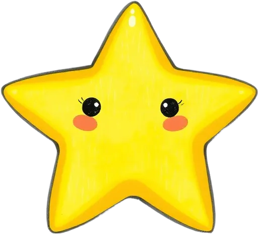
아이의 선택으로 이야기를 만들고,
그 이야기를 AI가 읽어줘요
React + FastAPI + Gemini
https://my-own-story.pages.dev
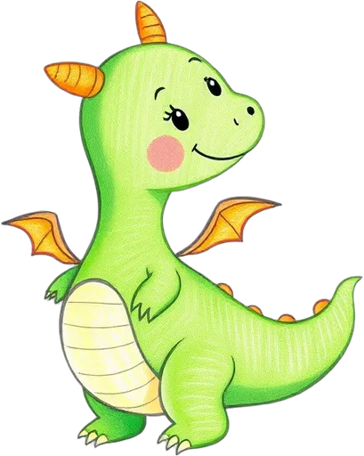
용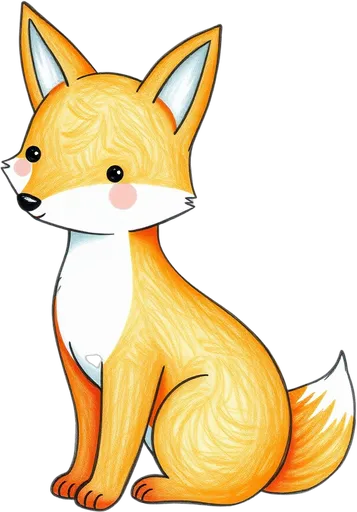
여우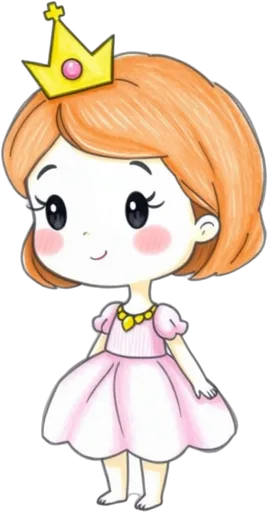
공주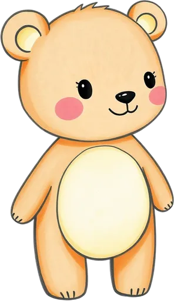
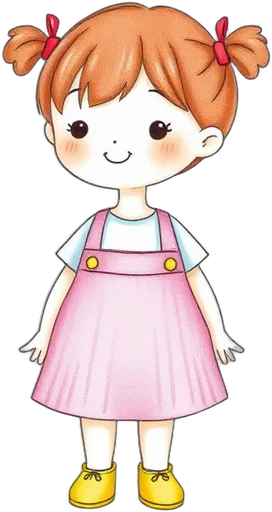
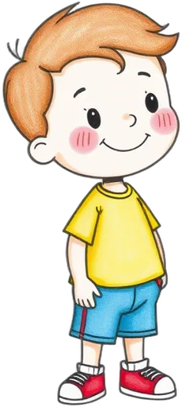
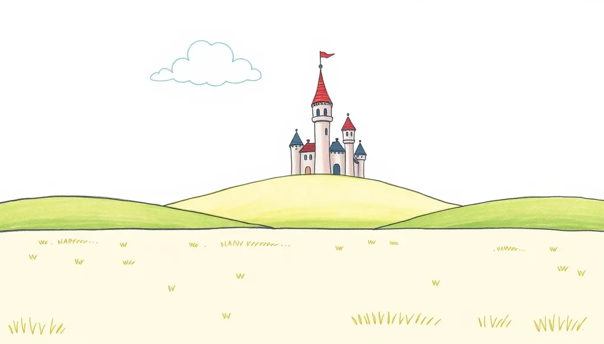
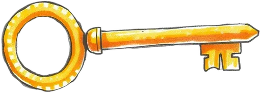
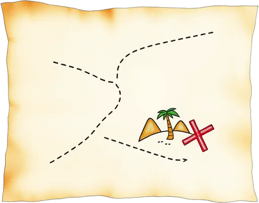
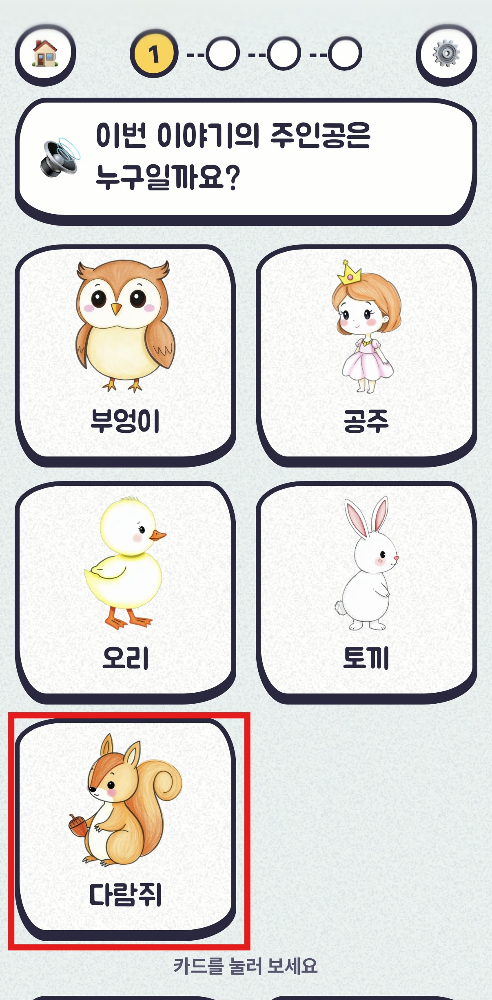
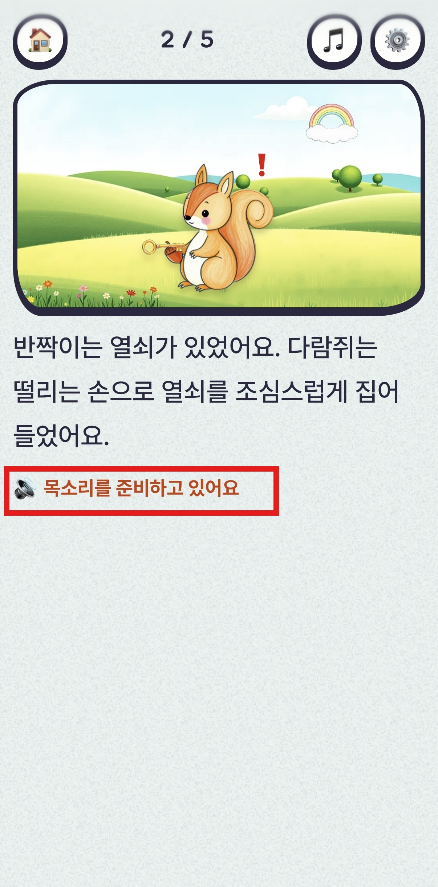
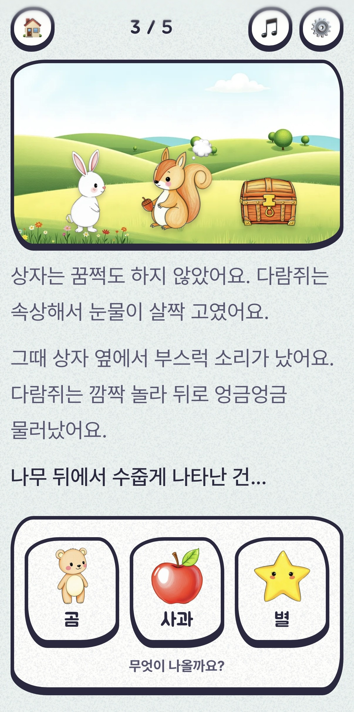
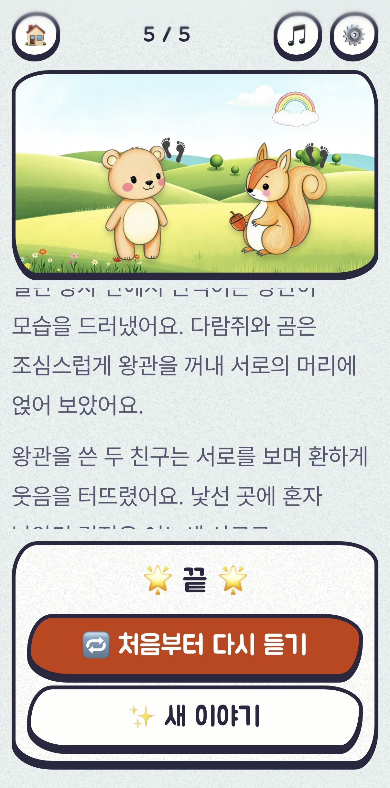
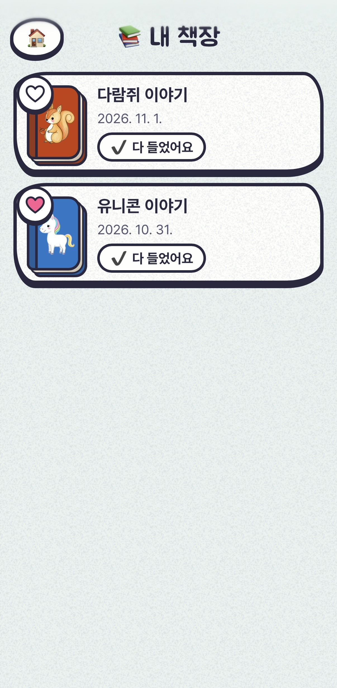
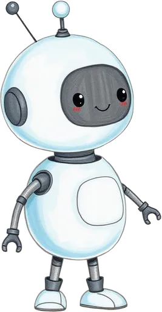
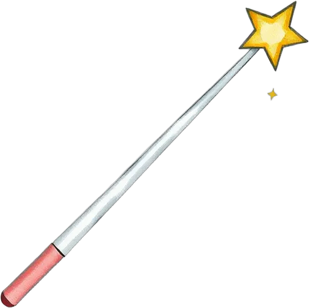
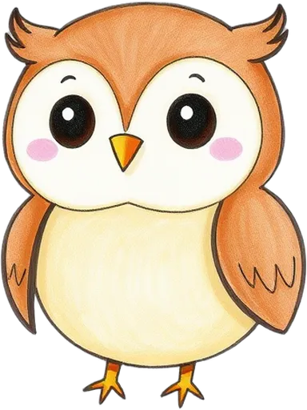
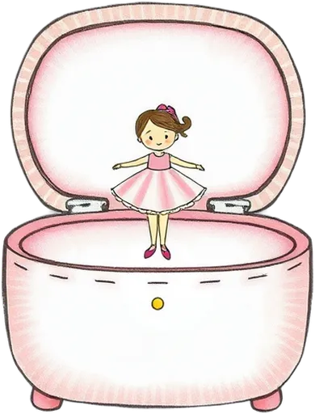
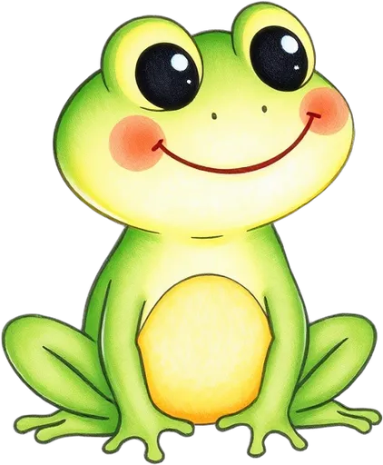
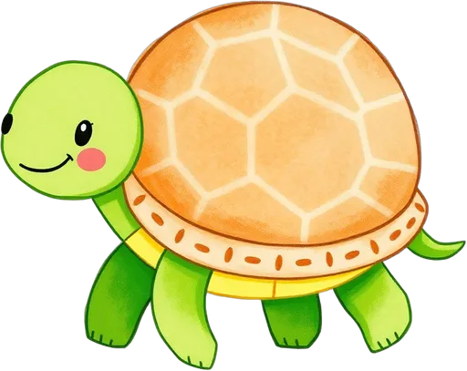
| 심사 | v4 | v9 | 차이 |
|---|---|---|---|
| Claude | 59.4 | 75.2 | +15.8 |
| ChatGPT | 76.8 | 81.4 | +4.6 |
| Gemini | 85.0 | 87.9 | +2.9 |
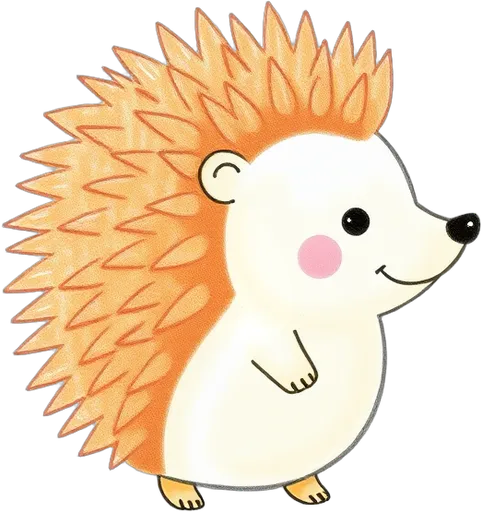
| v1 (실패 10) | v4 (실패 5) | v9 (실패 2) | |
|---|---|---|---|
| 처음 고른 카드 누락 | 6 | 1 | 2 |
| 쪽 수 틀림·쪽 0개 | 2 | 4 | 0 |
| 고르지 않은 선택지 등장 | 2 | 0 | 0 |
cut_off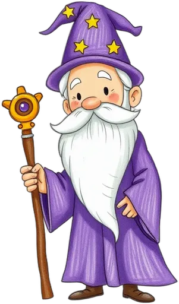
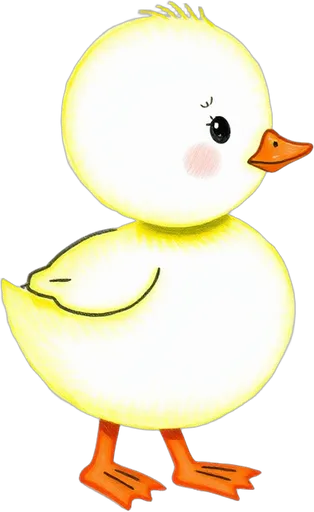